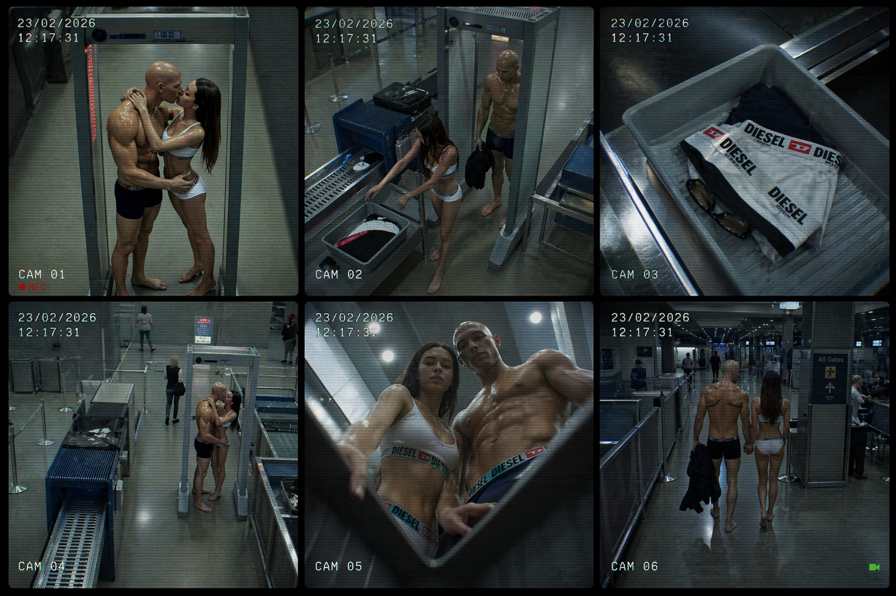
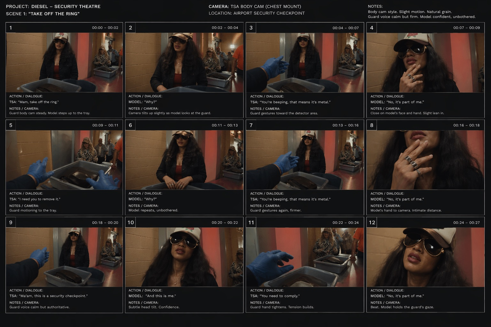

Image / in progress
Airport Checkpoint
An in-progress extension of the Diesel security-theatre world, where a screening line becomes a runway and the campaign turns on a model refusing to take off her rings.
- Year
- 2026
- Kind
- Image
- Role
- Concept, art direction, generative production
- Frames
- 6-camera CCTV sheet, 12-beat body-cam board
The premise
Security theatre, staged as a campaign.
A checkpoint asks you to remove your metal and hand over anything that identifies you. The scene keeps that instruction and answers it with the one line the whole idea rests on: no, it is part of me.


Structure
One instruction, refused.
The beat sheet is a loop rather than an escalation. The guard repeats the procedure, the model repeats the same answer, and the tension comes from neither of them moving.
-
Beat I
The instruction
“Ma’am, take off the ring.” Body cam steady, model steps up to the tray.
-
Beat II
The question
“Why?” Asked twice, unbothered, while the guard gestures at the detector.
-
Beat III
The refusal
“No, it’s part of me.” Close on the hand, then the gaze held until the clip runs out.
How it is being built
Pipeline.
Boarded before it is generated, so the dialogue and the camera position are fixed while the footage is still being tested.
Twelve beats at two-second intervals, each with dialogue and a camera note.
Two rigs only: ceiling CCTV for the world, chest-mounted body cam for the face.
Wardrobe, cast and terminal continuity carried across all six camera positions.
Surveillance furniture applied last: date, timecode, camera number, record state.